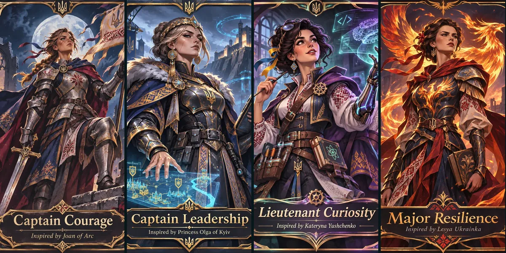
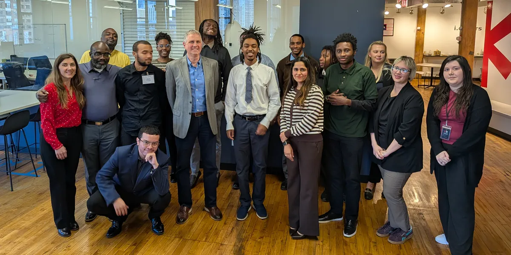

01 / FEATURED PROJECTCase study
Avalon Accounting Application
A Maven-based Java 17 and Spring Boot application with PostgreSQL-backed accounting workflows.
The repository includes dashboard, invoice, payment, product, category, client/vendor,
reporting, user, and company functionality.
Java 17Spring
BootMavenPostgreSQLSQL
View the code on GitHub →
02 / PRESENTATIONLive site
My Planetary Responsibility: SOLVE
An interactive presentation about my five strengths (detail-oriented, analytical, persistent,
curious and organized), how I will keep growing each one, and the technology careers they point
toward. To me, SOLVE means seeing problems as puzzles and using my strengths to create a
positive impact.
14 slides with keyboard, swipe and fullscreen navigation, a link for every slide, and
accessible markup, built without frameworks.
HTML5CSS3JavaScriptAccessibilityi.c.stars
03 / INTERACTIVE STORYLive site

Buffalo Soldiers: My Inner Army
An interactive visual story where eight original illustrated characters, inspired by historical
women, represent my personal and professional traits. Each one opens a full profile with
strengths, weaknesses, allies, conflicts and the armor she needs to grow.
Alliance and tension cards show how traits like Courage and Choice, or Devotion and Ambition,
work together and pull against each other. Built as a static site with an accessible,
keyboard-friendly dialog and reduced-motion support.
HTML5CSS3JavaScriptAccessibilityi.c.stars
04 / INDIVIDUAL PROJECTIn progress
Individual Tech Project
My next flagship project: combining a real user problem with AI and/or cybersecurity, rather than
building technology only for a demonstration.
AICybersecurityProblem solving
05 / LEADERSHIPReflection

High Tea Host: Leading Through Service
At i.c.stars Cycle 60, leaders from across Chicago join our cohort for High Tea conversations. I
hosted two of them, for Patrick Engelking and Arely Dorsey: researching each guest, preparing
questions and an introduction, and creating a space where our cohort could learn and connect.
This page collects how I prepared, seven lessons from our guests, and what hosting taught me
about leadership.
Public speakingActive listeningPreparationi.c.stars